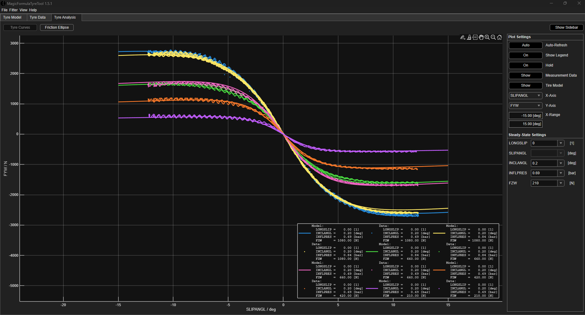

Model library
9 DOF
Corner balance model
Newest, and the most complex
Simulink
MF 6.1 tyre
26 parameters
Nine degrees of freedom: yaw and sideslip in the plane, heave, roll and pitch of the sprung mass, and the vertical motion of each unsprung corner. Load transfer falls out of the suspension states instead of a steady-state formula, so every tyre sees its own normal load and the Magic Formula returns cornering stiffness at that load, camber and pressure. The two tyres on an axle sum to the axle stiffness that drives the yaw-plane solution, and its lateral acceleration feeds straight back into the load transfer. That loop is the one the simpler models cut.
18 channels
Tyre model and selection, Magic Formula 6.1
MagicFormulaTyreTool
TTC data
Everything downstream needs a tyre, so this came first. Raw test data is binned by load, pressure and camber, checked for bins too thin to trust, smoothed, then fitted to Magic Formula 6.1 to produce the TIR file the Simulink models call. A weighted matrix then ranks candidates on peak grip, consistency, load sensitivity and thermal behaviour, and where a compound has no test data at all, a Mahalanobis distance through coefficient space finds its nearest measured neighbours.
2 DOF
Quarter car: ride, damping and contact patch
Simulink
front and rear
One corner, two masses: sprung and unsprung, with the tyre as a spring down to the road. Road input is either a measured profile or a PSD-shaped random surface. Sweeping the damping coefficient traces RMS body acceleration against RMS damper velocity, so comfort and control are read off the same axis and the point where more damping stops buying ride quality is a number rather than an opinion.
4 DOF
Pitch and heave
Simulink
Front and rear corners carried on one body, so heave and pitch are solved together rather than one at a time. The road is a physical track profile: discrete bumps at set distances rather than noise. That makes it easy to see how far the platform has settled before the next event arrives.
4 DOF
Roll, and where the load transfer goes
Simulink
ARB in the loop
The roll pair of the same structure: a sprung mass in roll over two unsprung corners, with the anti-roll bar included rather than folded into an equivalent spring rate. The corner equation of motion splits load transfer three ways: what goes through the springs and bars, what goes through the roll centre and the links, and what the unsprung mass puts straight into the tyre. That is the split the calculator below was written to check.
2 DOF
Bicycle model
Simulink
15 parameters
Two states, yaw rate and sideslip, and the smallest model that will tell you whether the car understeers. Cornering stiffness is read against vertical load rather than fixed, so the balance still moves as the car loads up. This is the model the corner balance model grew out of, and the one its answers get sanity-checked against.
3 DOF
Braking
Simulink
12 parameters
Longitudinal braking with wheel rotation at each axle. Pedal force runs through master cylinder area, brake bias, clamp force and rotor radius to a torque at each wheel, so bias is a setting you change and immediately see in the load split. The run here reaches 140 km/h, coasts, and brakes hard at three seconds.
2 DOF
Acceleration
Simulink
motor map
The straight-line run. A two-dimensional motor map is looked up on RPM and throttle, scaled by maximum motor torque and geared to the wheel, then held against rear slip ratio and longitudinal load transfer. It publishes the three channels that matter for gearing: acceleration, velocity and distance. Slip ratio, motor RPM and vertical force come out alongside them.
3 mechanisms
Lateral load transfer calculator
SI throughout
Milliken §18.4
The Milliken neutral-roll-axis method, re-expressed in SI and laid out so every input is visible. Mass, CG height, track, roll stiffness and roll centre heights go in; out comes the load transfer split by mechanism, the roll gradient, the front-to-rear distribution, and an inside-wheel lift check. It seeds the Simulink models, and gives a hand calculation to check them against. The moment balance line at the bottom is there to catch the small-angle assumption drifting.
The map it was all planned from
Nineteen models down the top, twenty-seven measurements down the side, and a cross in every cell where one needs the other. It was written before the models were, so the test plan knew what to go and measure and nothing ended up built on a guess.
Where the theory came from
A vehicle dynamics course worked through alongside the build. The derivations behind the Simulink blocks above start here: slip angles, the braking balance, the pitch equations.
Get in touch
Happy to walk through any of these.